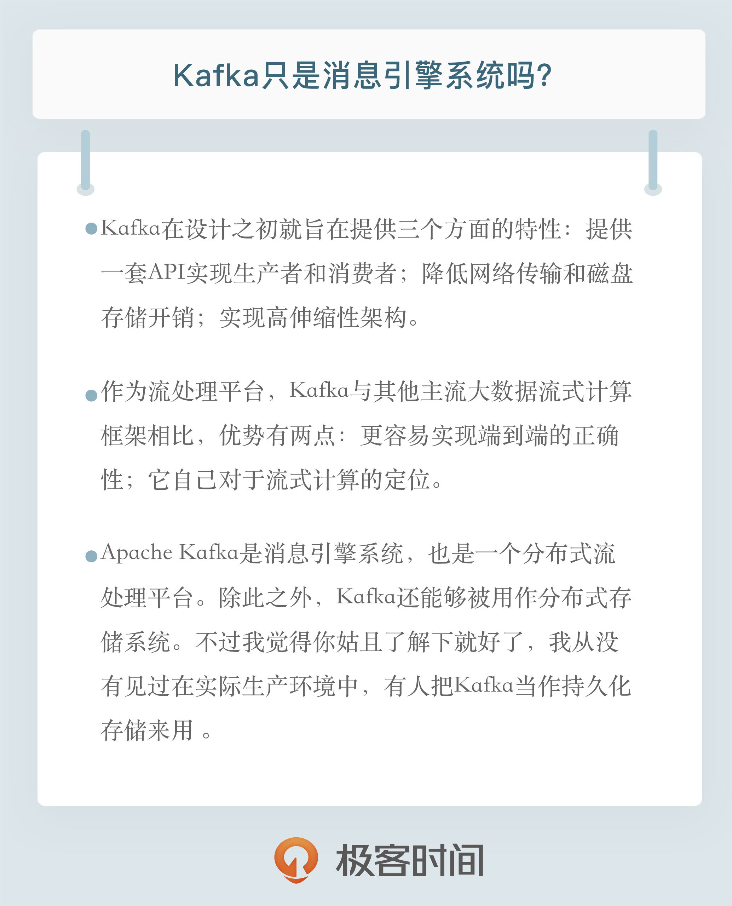

- 00 开篇词 为什么要学习Kafka？.md.html
- 01 消息引擎系统ABC.md.html
- 02 一篇文章带你快速搞定Kafka术语.md.html
- 03 Kafka只是消息引擎系统吗？.md.html
- 04 我应该选择哪种Kafka？.md.html
- 05 聊聊Kafka的版本号.md.html
- 06 Kafka线上集群部署方案怎么做？.md.html
- 07 最最最重要的集群参数配置（上）.md.html
- 08 最最最重要的集群参数配置（下）.md.html
- 09 生产者消息分区机制原理剖析.md.html
- 10 生产者压缩算法面面观.md.html
- 11 无消息丢失配置怎么实现？.md.html
- 12 客户端都有哪些不常见但是很高级的功能？.md.html
- 13 Java生产者是如何管理TCP连接的？.md.html
- 14 幂等生产者和事务生产者是一回事吗？.md.html
- 15 消费者组到底是什么？.md.html
- 16 揭开神秘的“位移主题”面纱.md.html
- 17 消费者组重平衡能避免吗？.md.html
- 18 Kafka中位移提交那些事儿.md.html
- 19 CommitFailedException异常怎么处理？.md.html
- 20 多线程开发消费者实例.md.html
- 21 Java 消费者是如何管理TCP连接的_.md.html
- 22 消费者组消费进度监控都怎么实现？.md.html
- 23 Kafka副本机制详解.md.html
- 24 请求是怎么被处理的？.md.html
- 25 消费者组重平衡全流程解析.md.html
- 26 你一定不能错过的Kafka控制器.md.html
- 27 关于高水位和Leader Epoch的讨论.md.html
- 28 主题管理知多少_.md.html
- 29 Kafka动态配置了解下？.md.html
- 30 怎么重设消费者组位移？.md.html
- 31 常见工具脚本大汇总.md.html
- 32 KafkaAdminClient：Kafka的运维利器.md.html
- 33 Kafka认证机制用哪家？.md.html
- 34 云环境下的授权该怎么做？.md.html
- 35 跨集群备份解决方案MirrorMaker.md.html
- 36 你应该怎么监控Kafka？.md.html
- 37 主流的Kafka监控框架.md.html
- 38 调优Kafka，你做到了吗？.md.html
- 39 从0搭建基于Kafka的企业级实时日志流处理平台.md.html
- 40 Kafka Streams与其他流处理平台的差异在哪里？.md.html
- 41 Kafka Streams DSL开发实例.md.html
- 42 Kafka Streams在金融领域的应用.md.html
- 加餐 搭建开发环境、阅读源码方法、经典学习资料大揭秘.md.html
- 用户故事 黄云：行百里者半九十.md.html
- 结束语 以梦为马，莫负韶华！.md.html
- 捐赠
03 Kafka只是消息引擎系统吗？
你好，我是胡夕。今天我们来聊一个老生常谈的话题：Kafka只是消息引擎系统吗？
要搞清楚这个问题，我们不可避免地要了解一下Apache Kafka的发展历程。有的时候我们会觉得说了解一个系统或框架的前世今生似乎没什么必要，直接开始学具体的技术不是更快更好吗？其实，不论是学习哪种技术，直接扎到具体的细节中，亦或是从一个很小的点开始学习，你很快就会感到厌烦。为什么呢？因为你虽然快速地搞定了某个技术细节，但无法建立全局的认知观，这会导致你只是在单个的点上有所进展，却没法将其串联成一条线进而扩展成一个面，从而实现系统地学习。
我这么说是有依据的，因为这就是我当初学习Kafka的方式。你可能不会相信，我阅读Kafka源码就是从utils包开始的。显然，我们不用看源码也知道这玩意是干什么用的，对吧？就是个工具类包嘛，而且这种阅读源码的方式是极其低效的。就像我说的，我是在一个点一个点地学习，但全部学完之后压根没有任何感觉，依然不了解Kafka，因为不知道这些包中的代码组合在一起能达成什么效果。所以我说它是很低效的学习方法。
后来我修改了学习的方法，转而从自上而下的角度去理解Kafka，竟然发现了很多之前学习过程中忽略掉的东西。更特别的是，我发现这种学习方法能够帮助我维持较长时间的学习兴趣，不会阶段性地产生厌烦情绪。特别是在了解Apache Kafka整个发展历史的过程中我愉快地学到了很多运营大型开源软件社区的知识和经验，可谓是技术之外的一大收获。
纵观Kafka的发展脉络，它的确是从消息引擎起家的，但正如文章标题所问，Apache Kafka真的只是消息引擎吗？通常，在回答这个问题之前很多文章可能就要这样展开了：那我们先来讨论下什么是消息引擎以及消息引擎能做什么事情。算了，我还是直给吧，就不从“唐尧虞舜”说起了。这个问题的答案是，Apache Kafka是消息引擎系统，也是一个分布式流处理平台（Distributed Streaming Platform）。如果你通读全篇文字但只能记住一句话，我希望你记住的就是这句。再强调一遍，Kafka是消息引擎系统，也是分布式流处理平台。
众所周知，Kafka是LinkedIn公司内部孵化的项目。根据我和Kafka创始团队成员的交流以及查阅到的公开信息显示，LinkedIn最开始有强烈的数据强实时处理方面的需求，其内部的诸多子系统要执行多种类型的数据处理与分析，主要包括业务系统和应用程序性能监控，以及用户行为数据处理等。
当时他们碰到的主要问题包括：
- 数据正确性不足。因为数据的收集主要采用轮询（Polling）的方式，如何确定轮询的间隔时间就变成了一个高度经验化的事情。虽然可以采用一些类似于启发式算法（Heuristic）来帮助评估间隔时间值，但一旦指定不当，必然会造成较大的数据偏差。
- 系统高度定制化，维护成本高。各个业务子系统都需要对接数据收集模块，引入了大量的定制开销和人工成本。
为了解决这些问题，LinkedIn工程师尝试过使用ActiveMQ来解决这些问题，但效果并不理想。显然需要有一个“大一统”的系统来取代现有的工作方式，而这个系统就是Kafka。
Kafka自诞生伊始是以消息引擎系统的面目出现在大众视野中的。如果翻看0.10.0.0之前的官网说明，你会发现Kafka社区将其清晰地定位为一个分布式、分区化且带备份功能的提交日志（Commit Log）服务。
这里引出一个题外话，你可能好奇Kafka这个名字的由来，实际上Kafka作者之一Jay Kreps曾经谈及过命名的原因。
因为Kafka系统的写性能很强，所以找了个作家的名字来命名似乎是一个好主意。大学期间我上了很多文学课，非常喜欢Franz Kafka这个作家，另外为开源软件起这个名字听上去很酷。
言归正传，Kafka在设计之初就旨在提供三个方面的特性：
- 提供一套API实现生产者和消费者；
- 降低网络传输和磁盘存储开销；
- 实现高伸缩性架构。
在专栏后面的课程中，我们将陆续探讨Kafka是如何做到以上三点的。总之随着Kafka的不断完善，Jay等大神们终于意识到将其开源惠及更多的人是一个非常棒的主意，因此在2011年Kafka正式进入到Apache基金会孵化并于次年10月顺利毕业成为Apache顶级项目。
开源之后的Kafka被越来越多的公司应用到它们企业内部的数据管道中，特别是在大数据工程领域，Kafka在承接上下游、串联数据流管道方面发挥了重要的作用：所有的数据几乎都要从一个系统流入Kafka然后再流向下游的另一个系统中。这样的使用方式屡见不鲜以至于引发了Kafka社区的思考：与其我把数据从一个系统传递到下一个系统中做处理，我为何不自己实现一套流处理框架呢？基于这个考量，Kafka社区于0.10.0.0版本正式推出了流处理组件Kafka Streams，也正是从这个版本开始，Kafka正式“变身”为分布式的流处理平台，而不仅仅是消息引擎系统了。今天Apache Kafka是和Apache Storm、Apache Spark和Apache Flink同等级的实时流处理平台。
诚然，目前国内对Kafka是流处理平台的认知还尚不普及，其核心的流处理组件Kafka Streams更是少有大厂在使用。但我们也欣喜地看到，随着在Kafka峰会上各路大神们的鼎力宣传，如今利用Kafka构建流处理平台的案例层出不穷，而了解并有意愿使用Kafka Streams的厂商也是越来越多，因此我个人对于Kafka流处理平台的前景也是非常乐观的。
你可能会有这样的疑问：作为流处理平台，Kafka与其他主流大数据流式计算框架相比，优势在哪里呢？我能想到的有两点。
第一点是更容易实现端到端的正确性（Correctness）。Google大神Tyler曾经说过，流处理要最终替代它的“兄弟”批处理需要具备两点核心优势：要实现正确性和提供能够推导时间的工具。实现正确性是流处理能够匹敌批处理的基石。正确性一直是批处理的强项，而实现正确性的基石则是要求框架能提供精确一次处理语义，即处理一条消息有且只有一次机会能够影响系统状态。目前主流的大数据流处理框架都宣称实现了精确一次处理语义，但这是有限定条件的，即它们只能实现框架内的精确一次处理语义，无法实现端到端的。
这是为什么呢？因为当这些框架与外部消息引擎系统结合使用时，它们无法影响到外部系统的处理语义，所以如果你搭建了一套环境使得Spark或Flink从Kafka读取消息之后进行有状态的数据计算，最后再写回Kafka，那么你只能保证在Spark或Flink内部，这条消息对于状态的影响只有一次。但是计算结果有可能多次写入到Kafka，因为它们不能控制Kafka的语义处理。相反地，Kafka则不是这样，因为所有的数据流转和计算都在Kafka内部完成，故Kafka可以实现端到端的精确一次处理语义。
可能助力Kafka胜出的第二点是它自己对于流式计算的定位。官网上明确标识Kafka Streams是一个用于搭建实时流处理的客户端库而非是一个完整的功能系统。这就是说，你不能期望着Kafka提供类似于集群调度、弹性部署等开箱即用的运维特性，你需要自己选择适合的工具或系统来帮助Kafka流处理应用实现这些功能。
读到这你可能会说这怎么算是优点呢？坦率来说，这的确是一个“双刃剑”的设计，也是Kafka社区“剑走偏锋”不正面PK其他流计算框架的特意考量。大型公司的流处理平台一定是大规模部署的，因此具备集群调度功能以及灵活的部署方案是不可或缺的要素。但毕竟这世界上还存在着很多中小企业，它们的流处理数据量并不巨大，逻辑也并不复杂，部署几台或十几台机器足以应付。在这样的需求之下，搭建重量级的完整性平台实在是“杀鸡焉用牛刀”，而这正是Kafka流处理组件的用武之地。因此从这个角度来说，未来在流处理框架中，Kafka应该是有一席之地的。
除了消息引擎和流处理平台，Kafka还有别的用途吗？当然有！你能想象吗，Kafka能够被用作分布式存储系统。Kafka作者之一Jay Kreps曾经专门写过一篇文章阐述为什么能把Kafka用作分布式存储。不过我觉得你姑且了解下就好了，我从没有见过在实际生产环境中，有人把Kafka当作持久化存储来用 。
说了这么多，我只想阐述这样的一个观点：Apache Kafka从一个优秀的消息引擎系统起家，逐渐演变成现在分布式的流处理平台。你不仅要熟练掌握它作为消息引擎系统的非凡特性及使用技巧，最好还要多了解下其流处理组件的设计与案例应用。

开放讨论
你觉得Kafka未来的演进路线是怎么样的？如果你是Kafka社区的“掌舵人”，你准备带领整个社区奔向什么方向呢？（提示下，你可以把自己想象成Linus再去思考）
欢迎写下你的思考和答案，我们一起讨论。如果你觉得有所收获，也欢迎把文章分享给你的朋友。
© 2019 - 2023 Liangliang Lee. Powered by gin and hexo-theme-book.